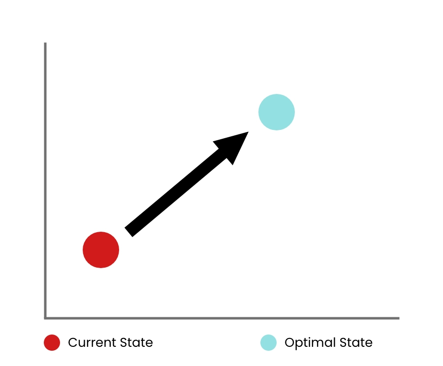
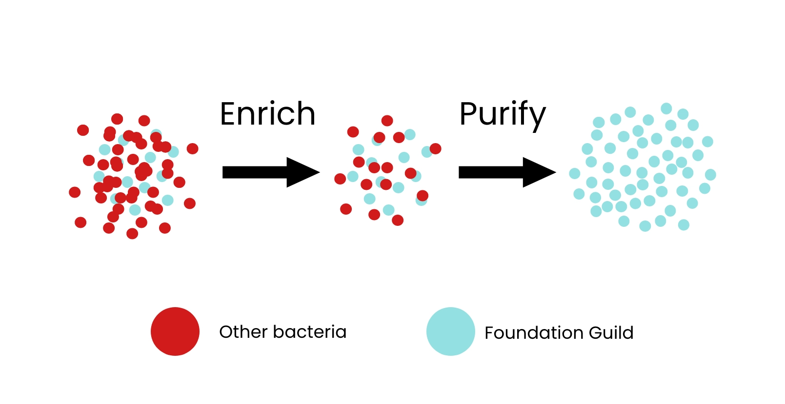

Notitia's Foundation Guild™ Microbiome R&D Platform
Based on these Four Pillars and the ground-breaking scientific discoveries, we have developed the Foundation Guild™ Microbiome R&D Platform that serves as the basis of various technologies for promoting the Foundation Guild™ in patients and the generally healthy population.
Notitia's platform and technologies are centered on the Foundation Guild™ gut bacteria, which has been proven to have a causal relationship with human health and diseases. Our proprietary data analysis pipeline allows us to study members of the Foundation Guild™ at the strain-level and examine relationships within their respective guilds. This entire process does not rely on existing references, enabling us to discover new bacteria that could be important to human health.
One of the most important aspects of our platform is its ability to analyze and adjust Foundation Guild™ gut bacteria in each individual. The platform is made up of three unique technologies:
1. Testing the Foundation Guild™
Notitia has created a predictive analysis method to identify the Foundation Guild™ in each person's gut microbiota. We can analyze an individual's fecal sample and investigate: does this individual have Foundation Guild™ bacteria in their gut? If so, what are the specific members of their Foundation Guild™? What kind of nutrients are required to support their growth? The analysis can also predict the optimal state of the Foundation Guild™ for each person and keep track of their recovery and progression.
2. Growing the Foundation Guild™
Notitia has invented a system to isolate and grow the Foundation Guild™ bacteria from fecal samples. We can exclude all other microorganisms inside the fecal sample and isolate only the Foundation Guild™ bacteria. Regardless of the number of specific bacteria one person has in their Foundation Guild™, our method allows us to isolate the entire group as a whole and store it in a cryogenic repository for future use. Additionally, this technology enables us to create LBP (live biotherapeutic products) drugs, which contain the Foundation Guild™ bacteria to administer to patients that need microbiota transplantation.
3. Nutrition for the Foundation Guild™
Notitia has designed formulas that contain the proper nutrients to support the Foundation Guild™ growth for patients and the generally healthy. These formulas contain critical ingredients such as complex carbohydrates and phytochemicals with antioxidant activity. Each ingredient is designed to be efficiently utilized by the Foundation Guild™.
The clinical formula focuses on supporting as many types of Foundation Guild™ bacteria there are in the human gut. In contrast, the non-clinical formula aids the most common Foundation Guild™ members and is a versatile food ingredient.